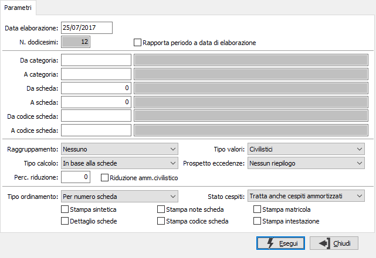

Generazione ammortamenti
Con la generazione dei movimenti di ammortamento inizia la fase di gestione annuale degli ammortamenti. Il programma provvede a creare i movimenti di ammortamento relativi ai cespiti validi e producendo contestualmente una stampa di controllo. Il programma di generazione ammortamento fiscale può essere eseguito una sola volta. Si consiglia pertanto di accedervi dopo aver eseguito, tramite il programma di simulazione ammortamenti, tutte le simulazioni di prova necessarie.
I movimenti di ammortamento così creati vengono successivamente esaminati dalle varie stampe annuali e concorrono, al termine del ciclo di fine esercizio, alla generazione delle scritture contabili di ammortamento.
La stampa di controllo prodotta durante la generazione può essere raggruppata per categoria, può essere sintetica o analitica, può essere riportato il dettaglio delle schede cespite e può riportare le note inserite in fase di registrazione del movimento.

DATA ELABORAZIONE: inserire la data in cui viene eseguito il calcolo dell'ammortamento. Le quote verranno calcolate per il numero di mesi che intercorrono dalla data di inizio esercizio a quella di elaborazione.
NUMERO DODICESIMI: viene proposto il numero di mesi che compongono l'esercizio senza possibilità di modifica.
RAPPORTA PERIODO A DATA DI ELABORAZIONE: se la casella viene spuntata il calcolo dell'ammortamento viene rapportato alla data di elaborazione, quindi la quota anzichè essere calcolata sull'intero dell'esercizio viene calcolata a giorni dalla data di inizio esercizio fino alla data di elaborazione. Tale opzione può essere utilizzata ad esempio nel caso di calcolo dell'ammortamento di una scheda che si intende cedere nel corso dell'esercizio.
DA CATEGORIA: indicare il codice della categoria gestionale dal quale si desidera iniziare l’elaborazione. Sul campo sono attive le funzioni di ricerca (F9).
A CATEGORIA: indicare il codice della categoria gestionale alla quale si desidera terminare la stampa. Sul campo sono attive le funzioni di ricerca (F9).
DA SCHEDA: indica il numero del cespite con cui iniziare la selezione. Sul campo sono attive le funzioni di ricerca (F9). L'utilizzo del numero cespite annulla quello del codice e viceversa.
A SCHEDA: indica il numero del cespite con cui terminare la selezione. Sul campo sono attive le funzioni di ricerca (F9). L'utilizzo del numero cespite annulla quello del codice e viceversa.
DA CODICE SCHEDA: indica il codice del cespite con cui iniziare la selezione. Sul campo sono attive le funzioni di ricerca (F9). L'utilizzo del numero cespite annulla quello del codice e viceversa.
A CODICE SCHEDA: indica il codice del cespite con cui terminare la selezione. Sul campo sono attive le funzioni di ricerca (F9). L'utilizzo del numero cespite annulla quello del codice e viceversa.
RAGGRUPPAMENTO: definisce l’eventuale tipo di raggruppamento in stampa. Valori ammessi: Nessuno; Per categoria.
TIPO CALCOLO: definisce di criteri di calcolo degli ammortamenti. Valori ammessi: In base alle schede; Ammortamento ordinario (in base ai coefficienti contenuti nelle schede); Ammortamento ridotto (in base ai coefficienti di ammortamento ordinario contenuti nelle schede, ridotti della percentuale del campo successivo).
PERCENTUALE DI RIDUZIONE: indicare la percentuale di riduzione delle quote di ammortamento ordinario. Campo significativo solo in caso di ammortamento ridotto.
RIDUZIONE AMM. CIVILISTICO: Nel caso in cui venga selezionato come Tipo calcolo il valore "Ammortamento ridotto" (applicato ai valori fiscali), definisce se si intende applicare tale percentuale di riduzione anche al valore dell'ammortamento civilistico.
TIPO VALORI: il campo è presente solo se attiva la gestione degli ammortamenti fiscali e definisce se stampare i valori fiscali o civilistici.
prospetto eccedenze: il campo è presente solo se attiva la gestione degli ammortamenti fiscali e definisce se e come riportare in stampa le informazioni relative agli ammortamenti fiscali applicati, considerando le eccedenze rispetto agli ammortamenti civilistici; valori possibili:
Nessun riepilogo
Riepilogo per categoria
Dettaglio di tutte le schede
Dettaglio schede diverse
TIPO ORDINAMENTO: determina il criterio per l'ordinamento della stampa. Valori ammessi: Per numero scheda; Per descrizione scheda; Per codice scheda.
STAMPA SINTETICA: definisce la tipologia di stampa: sintetica (casella con segno di spunta) oppure analitica.
DETTAGLIO SCHEDE: definisce se effettuare la stampa del dettaglio delle schede cespiti (casella con segno di spunta).
STAMPA NOTE SCHEDA: definisce se deve essere stampato il contenuto del campo note (casella con segno di spunta).
STAMPA CODICE SCHEDA: definisce se deve essere stampato il codice del cespite (casella con segno di spunta).
STAMPA MATRICOLA: definisce se deve essere stampata la matricola del cespite (casella con segno di spunta).
STAMPA INTESTAZIONE: indica se deve essere stampata come prima pagina del report una pagina contenente tutte le informazioni inerenti i criteri di selezione specificati per il report stesso (casella con segno di spunta).